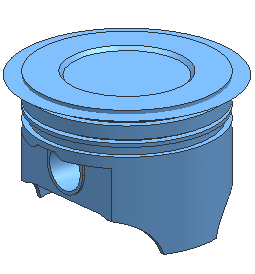

Import the STEP file
The STEP file is a neutral file used to exchange data. The standard provides a mechanism that is capable of describing product data throughout the life cycle of a product, independent from any particular system. A STEP file can be used for product sharing, and can also be used for archiving data in a neutral format.
|
File |
-
Import→STEP214
-
 Browse to piston.stp
Browse to piston.stp -
OK
STEP214 File dialog box
-
 Surfaces
Surfaces -
Sew Surfaces Automatically
-
OK
Import from STEP214 Options dialog box

Wait for the import to finish.